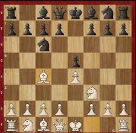
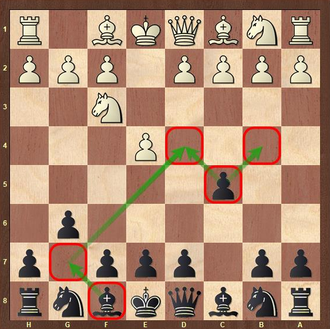

Backstory:
I learned to play chess at a very young age but never become competitive and serious it's
something that we just played whenever I find someone knows the game and that barely happens
thats why I rarely played the game that changed when in 11th grade where a lot of my classmates
knows the game I started to learn openings and strategys doing puzzles and grind some games online.
My Top 5 Chess Openings

The Italian Game is one of the oldest openings in chess and has
been around for centuries. This classical 1.e4 opening can lead to slower and positional
games as well as open, tactical battles. Although very common among beginners, the Italian Game is a
part of the repertoire of players of every level.

This early g6 in the Sicilian signifies the Hyper-Accelerated Dragon (HAD).
The main idea is to delay d6, in order to later be able to play d5 push in one go.
When it gets too risky, black can always transpose into the regular dragon structure
by playing d6. Another plus is, that black often has opportunities to force white to
castle kingside. The drawback is that white can play c4 before Nc3 (Maroczy Bind)
or get into sharp lines early on.

The Queen's Gambit is one of the oldest and most reputable 1.d4 openings for White. Unlike
1.e4 openings, the Queen's Gambit usually evolves into a strategic game rather than an all-out
tactical battle. Despite being around for centuries, this opening is still one of the cornerstones
of every elite players' repertoire. It's also an excellent choice for beginners and intermediate
players.

The London System is a popular 1.d4 opening for White. Known for its solidity and
simplicity, it avoids the vast amount of theory of other 1.d4 openings. The London System is a favorite
among club players for its straightforward development and lack of sharp counterplay for Black.

The King's Indian Defense is a dynamic opening for Black against 1.d4. It leads to
rich and complex positions where Black aims for a counterattack. This opening has been a favorite
of many world champions, including Garry Kasparov.
Images
Here are some images of me playing